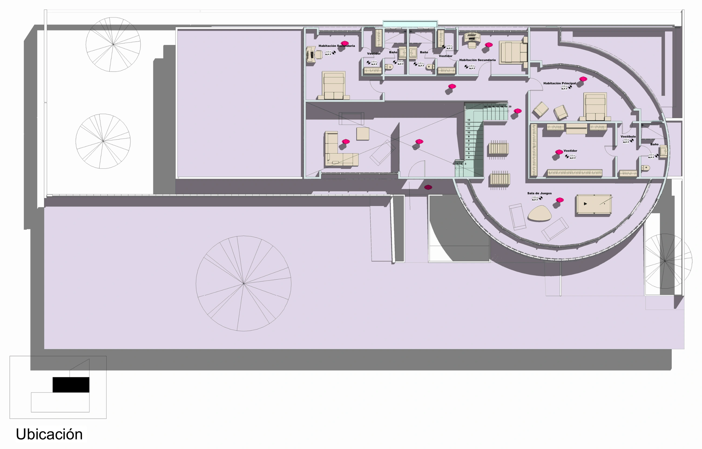
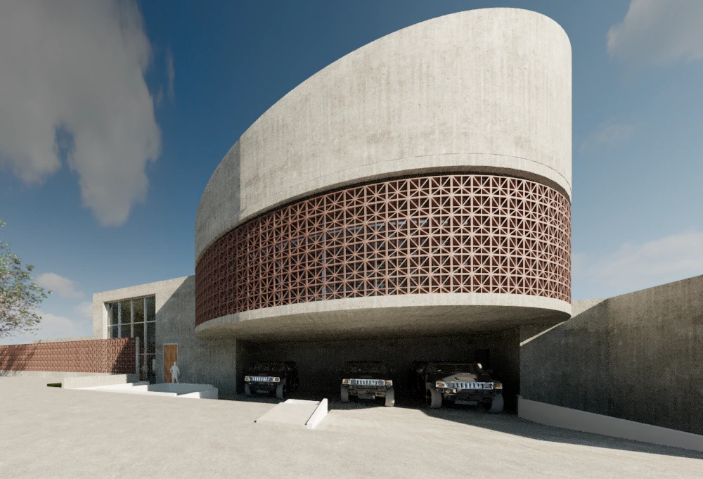
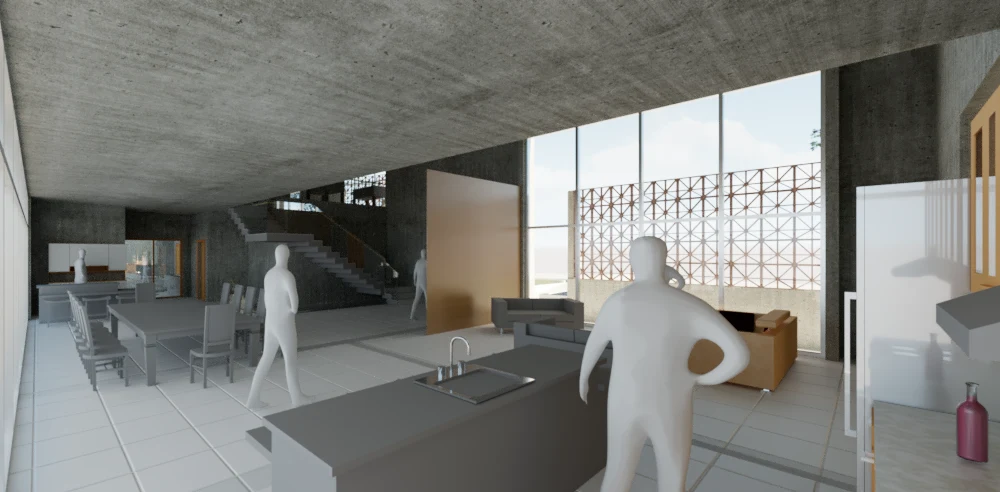
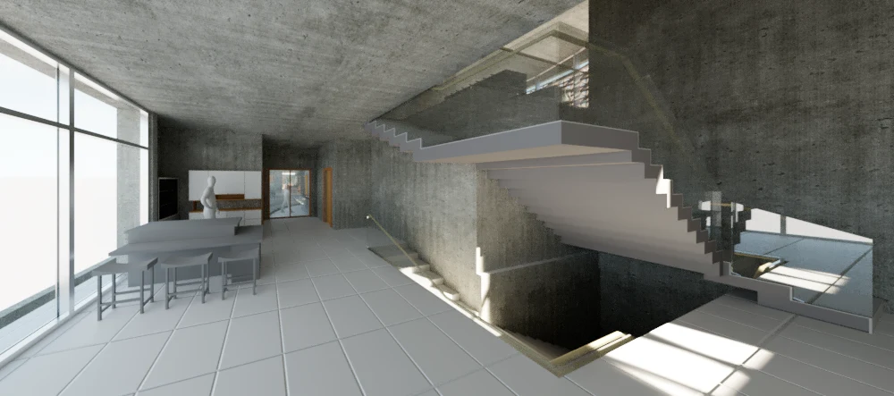
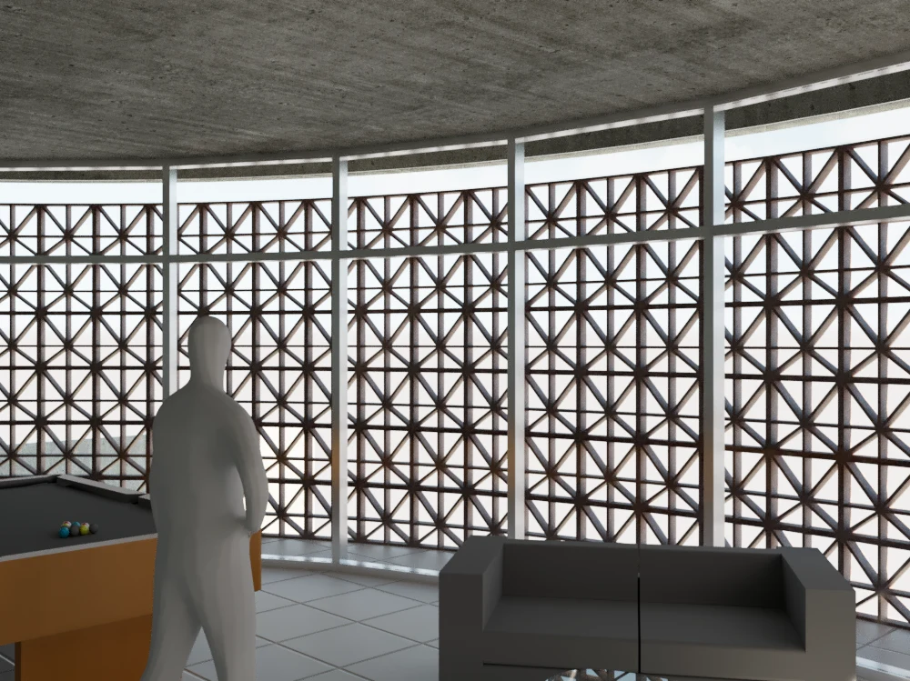

Ampliar plano ↗ ARQUITECTURA PARA VIVIR DESPACIORESIDENCIAL LAS NUBES / CASA BABEL
Casa Babel.
Habitar entre nubes.
Descubre cada ambiente.
Explora cada perspectiva.
Conoce Casa Babel.

ENTRA A CASA BABELExplorar el recorrido virtual↗CASA BABEL · VOLUMEN PRINCIPALLuz natural.
Vida extraordinaria.↗
Vida extraordinaria.↗
DISEÑO QUE RESPIRA CONTIGOExplora la residencia ↓01 — 04
EL CONCEPTO / RESIDENCIAL LAS NUBESDe la tierra
De la tierra
hacia el cielo.
Casa Babel toma su nombre de la Torre de Babel y de la imagen que inspira este proyecto: el deseo de ascender y acercarse al cielo.
Ubicada en Residencial Las Nubes, la casa encuentra en su entorno una relación directa con esa idea. Babel y Las Nubes se unen en un mismo concepto: habitar un espacio que dirige la mirada hacia lo alto.
Esta interpretación arquitectónica se expresa en una composición de volúmenes escalonados y un gesto ascendente. La forma sugiere un recorrido desde la tierra hacia el cielo, convirtiendo el ascenso en el hilo conductor de la propuesta.
01 Volúmenes escalonados02 Ascenso03 Cielo y nubes
01 / GALERÍA VISUALCada espacio.
Cada espacio.
Otra perspectiva.
Una galería para detenerte en los detalles.
Selecciona un ambiente y amplía la imagen.

EL CORAZÓN DE LA CASAAquí caben todos
Aquí caben todos
tus mejores momentos.
Una sala abierta a la conversación, las sobremesas y esos días que no quieres que terminen.
DISTRIBUCIÓN / PLANTAS ARQUITECTÓNICASLa casa,
La casa,
desde otra mirada.
Explora la relación entre los espacios y los niveles de Casa Babel. Abre cada planta para observar sus detalles.
02 / RECORRIDO VIRTUALLa puerta está abierta.
La puerta está abierta.
Adelante.
Un recorrido visual, a tu ritmo.
Nueve perspectivas del proyecto.

CASA BABEL / EXPERIENCIA VISUAL
01 / 09
El ascenso
La escalera expresa la idea de ascender y conecta los espacios de la residencia.
EXPLORA CON LAS FLECHAS O ELIGE UN AMBIENTERecorrido por renders del proyecto · No es una captura 360°

LOS PEQUEÑOS MOMENTOS LO CAMBIAN TODO.03 / LA VIDA AQUÍLo especial
Lo especial
se vuelve
cotidiano.
01
Mañanas con otra luz
Abre las cortinas. Deja que el día entre a su propio ritmo.
02
Espacio para ser tú
Leer, crear, compartir o simplemente no hacer nada.
03
Volver siempre se siente bien
Ese instante en que el mundo se queda afuera y empieza tu calma.
No es tener más.
Es sentir que estás
justo donde quieres estar.